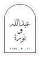
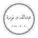

ملحق لـتوزيعات المناسبات بالليزر، 16 نوفمبر 2026. عيّنات لنا لا للبيع.
عيّنات التوزيعات: ملفات الليزر
ثلاث عيّنات من أربع جاهزة للقص على xTool P2S، والرابعة تنتظر صورة. الأسماء والتاريخ أمثلة لا تخص أحدًا.
الملفات


| العيّنة | الخامة | العمليات | الحالة |
|---|---|---|---|
| بطاقة مقوّسة | أبلكاش بتولا أو زان 3 مم | حفر الأسماء والتاريخ والإطار، ثم قص الثقب والحافة | ملف جاهز |
| ميدالية حرف | أكريليك 3 مم، أو خشب 3 مم | حفر الحرف داخل حافته، ثم قص الثقب والشكل | ملف جاهز |
| غطاء برطمان | غطاء خشبي جاهز بقطر 70 مم | حفر فقط، والدائرة الزرقاء للمحاذاة | يُقاس الغطاء أولًا |
| بورتريه خطي لعروسين | أبلكاش 3 مم | حفر خطي من مسارات استوديو FLUX | ينتظر صورة |
الطبقات في الملف
- أسود معبّأ: حفر. أحمر بخط رفيع: قص. أزرق متقطع: مرجع، يُطفأ إخراجه في xTool Creative Space.
- الوحدة مليمتر والمقاس مكتوب في الملف، فيُفتح بمقاسه الحقيقي دون تحجيم.
- النص محوّل إلى مسارات، فلا يحتاج جهاز الآلة الخط. الأسماء بخط DecoType Thuluth، والتاريخ بخط DecoType Naskh، وكلاهما من خطوط ويندوز.
خطوط ويندوز مرخّصة لإنشاء المحتوى وطباعته. استعمالها على منتج يُباع يُراجع قبل البيع، أو يُستبدل بخط مفتوح الرخصة. العيّنات لنا فلا يمسّها ذلك.
التشغيل على P2S
- افتح الملف في xTool Creative Space واختر الخامة من مكتبة المواد فيه. القيم تبدأ من المكتبة لا من هذه الصفحة.
- على قصاصة من الخامة نفسها: مصفوفة اختبار صغيرة للحفر، وقطعة قص 10 مم للتأكد أن القص ينفذ من أول مرور.
- رتّب الطبقات: الحفر أولًا، ثم الثقوب، ثم الحافة الخارجية آخرًا، كي لا تتحرك القطعة قبل انتهاء حفرها.
- الغطاء: قِس قطره الفعلي، وطابق الدائرة الزرقاء على حافته بالكاميرا، ثم أطفئ إخراجها.
- الشفط يعمل طوال التشغيل، والأكريليك والخشب فقط. لا PVC ولا فينيل ولا جلد صناعي.
ما نقيسه لكل عيّنة
هذا الجدول يُملأ عند القص، وهو ما تحتاجه خطوة «قياس الوقت والكلفة» في وثيقة التوزيعات.
| العيّنة | الإعدادات المستعملة | زمن القطعة | زمن لوح كامل | قطع في اللوح | كلفة الخامة للقطعة | النتيجة |
|---|---|---|---|---|---|---|
| بطاقة مقوّسة | ||||||
| ميدالية حرف | ||||||
| غطاء برطمان |
مساحة P2S 600 × 305 مم. عدد القطع في اللوح يحسبه البرنامج عند الترتيب، ويُترك بين القطع 2 مم على الأقل.
البورتريه الخطي
يحتاج صورة لعروسين أو لشخص يقبل استعمالها في عيّنة. تمر الصورة في استوديو FLUX فتخرج رسمًا خطيًا، ثم مسارات SVG بالمليمتر تُحفر خطوطًا على الخشب. لم نصنعه بعد لأن الصورة غير موجودة.
إعادة التوليد
لتغيير الأسماء أو الحرف أو قطر الغطاء: عدّل الثوابت في أول build_samples.py ثم شغّل python laser-cases/samples/build_samples.py. يحتاج fontTools وshapely وarabic-reshaper وpython-bidi، وكلها مثبتة على هذا الجهاز.